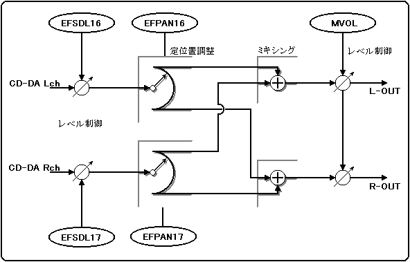

★HARDWARE Manual
★SCSPユーザーズマニュアル
★HARDWARE Manual
★SCSPユーザーズマニュアル
図3.1 CD-DA経路

まず各音源間のレベルバランスをとるための“ＥＦＳＤＬ１６／１７”、各音源の定位を指定する“ＥＦＰＡＮ１６／１７”、 そして最終的に出力レベルを調整する“ＭＶＯＬ”です。
こういう方式をとった理由としては、サターンにはアンプ（増幅器）が搭載されていないために、音量を持ち上げることができませんので、ダイナミックレンジをできるだけ広くとるように調整できないと、音量が非常に小さくなってしまうからです。
CD-DAだけしか音を出力しないという場合、他にミキシングする音が無いということから、レベルは０［ｄＢ］でも良いことになりますので、ＥＦＳＤＬ１６／１７をそれぞれ“７Ｈ”に設定します。
他に音を鳴らす場合には、レベルを下げてオーバーフローしないようにしてください。（ちなみに値を小さくしていくと、音量が小さくなります。）
CD-DAを出力するうえで注意しなければならないことは、CD-DAに関していえばＬＲ（左右チャンネル）にわかれてＳＣＳＰに入力されてきますが、ＳＣＳＰ側ではＰＣＭ音源／ＦＭ音源の音と同じように扱っていますので、 Ｌチャンネル側はＬに、Ｒチャンネル側はＲにと、正しくパンニング設定をしないと、CD-DAがステレオであっても実際にはステレオで出力されないといったことがおきてしまいます。
ですから、“ＥＦＰＡＮ１６”には“１ＦＨ”を、“ＥＦＰＡＮ１７”には“０ＦＨ”を設定します。（レジスタの設定内容に対する定位の位置に関するデータは後述の「ミキサー」の項目を参照してください。
これは最終段のマスターボリュームなので、とりあえず最大音量の“ＦＨ”に設定をします。
今までの設定をまとめてみますと、下表3.1 のようになります。
スロット制御レジスタ スロット番号１６ | ||||||||||||||||
| アドレス | 25B00216h／100216h | 25B00217h／100217h | ||||||||||||||
| ビット | 15 | 14 | 13 | 12 | 11 | 10 | ９ | ８ | ７ | ６ | ５ | ４ | ３ | ２ | １ | ０ |
| レジスタ | − | EFSDL16[7:5] | EFPAN16[3:0] | |||||||||||||
| 初期値 | 0 | 0 | 0 | 0 | 0 | 0 | 0 | 0 | 1 | 1 | 1 | 1 | 1 | 1 | 1 | 1 |
| ＆Ｈ(16進) | 0 | 0 | F | F | ||||||||||||
スロット制御レジスタ スロット番号１７ | ||||||||||||||||
| アドレス | 25B00236h／100236h | 25B00237h／100237h | ||||||||||||||
| ビット | 15 | 14 | 13 | 12 | 11 | 10 | ９ | ８ | ７ | ６ | ５ | ４ | ３ | ２ | １ | ０ |
| レジスタ | − | EFSDL16[7:5] | EFPAN16[3:0] | |||||||||||||
| 初期値 | 0 | 0 | 0 | 0 | 0 | 0 | 0 | 0 | 1 | 1 | 1 | 0 | 1 | 1 | 1 | 1 |
| ＆Ｈ(16進) | 0 | 0 | E | F | ||||||||||||
ＳＣＳＰ共通制御レジスタ | ||||||||||||||||
| アドレス | 25B00400h／100400h | 25B00401h／100401h | ||||||||||||||
| ビット | 15 | 14 | 13 | 12 | 11 | 10 | ９ | ８ | ７ | ６ | ５ | ４ | ３ | ２ | １ | ０ |
| レジスタ | − | M4 | D18 | VER[7:4] | MVOL[3:0] | |||||||||||
| 初期値 | 0 | 0 | 0 | 0 | 0 | 0 | 1 | 0 | 0 | 0 | 0 | 0 | 1 | 1 | 1 | 1 |
| ＆Ｈ(16進) | 0 | 2 | 0 | F | ||||||||||||
ただし、モノラルにしたい場合には、ＥＦＳＤＬの値をステレオ設定の場合に対して、１小さい数にしてください。
★HARDWARE Manual
★SCSPユーザーズマニュアル